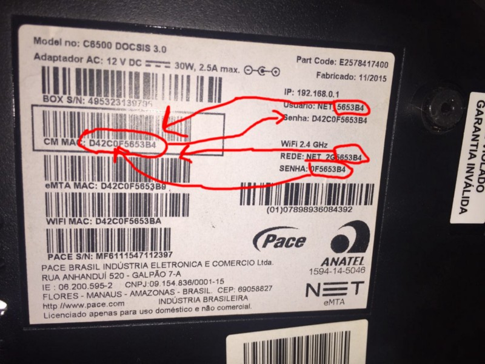

1480550400
[ Originalmente postado em 01 Dec 16 @ 20:51 ]
[ Originalmente postado em 01 Dec 16 @ 20:51 ]
Oi , esse post é em pt/br mesmo porque é sobre a NET e é ridículo e pequeno .
TL;DR : Fiz um script que “descobre” a senha do wifi de uma rede NET_2GXXXX ou NET_5GXXXX e se conecta a ela , tá lá no fim do post
Not so Long version : Por algum motivo alguém achou que seria um bom default usar como senha padrão da wifi da NET os 4 últimos hexas do CM_MAC do roteador. Se isso já não fosse ruim o suficiente, o mesmo alguém achou seguro colocar os 3 ultimos hexas do mesmo CM_MAC NA PORRA DO SSID da rede. Bem, 1 hexa é extremamente difícil de fazer brute, mas que bom que o único hexa que muda do CM_MAC pro BSSID é o último e o mesmo aparece no SSID do wifi , yay .
DESENHANDO :

Vamos a um exemplo :
$ sudo /System/Library/PrivateFrameworks/Apple80211.framework/Versions/A/Resources/airport scan SSID BSSID RSSI CHANNEL HT CC SECURITY (auth/unicast/group) 5put1n1ka16570 00:15:6d:d8:e1:ff -88 161 N -- NONE GVT-0A5F 2c:e4:12:89:0a:63 -74 1 Y -- WPA2(PSK/AES/AES) GVT-1893 54:b8:0a:f3:18:93 -79 5 Y -- WPA2(PSK/AES/AES) Net virtua 20:73:55:71:ab:50 -75 6,-1 Y US WPA2(PSK/AES/AES) NET_2G42559C 00:37:b7:42:55:a2 -75 1 Y -- WPA(PSK/AES,TKIP/TKIP) WPA2(PSK/AES,TKIP/TKIP)
Notem o NET_2G42559C : 42559C é igual ao final do BSSID 00:37:b7:42:55:a2 menos o ultimo hexa , que é justamente o que muda para o CM_MAC , então a gente sabe que o CM_MAC é igual a 00:37:b7:42:55 ( do BSSID ) + 9C do final do SSID .
Ah ! E pra piorar , as credenciais padrões do admin do roteador é , se preparem:
Login : SSID - 2G
Password : CM_MAC
é , tá difícil .
Enfim , tá ai um script de Linux e OS X pra se conectar automáticamente à uma rede NET_2GXXXXX
Repo : https://github.com/geolado/Default-Password-Wifi-Owner
By Caio Lüders on April 16, 2017.
Exported from Medium on June 5, 2019.